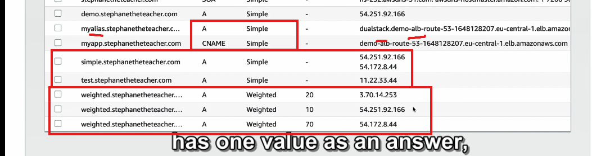

Routing policy route53'simple

1. Tổng quan về chính sách định tuyến (Routing Policy)
- Chức năng chính: Giúp Route 53 phản hồi các truy vấn DNS (Domain Name System).
- Không nhầm lẫn với "routing" của Load Balancer:
- Load Balancer định tuyến lưu lượng thực tế tới các instance backend.
- Route 53 chỉ trả lời các truy vấn DNS và không tham gia trực tiếp vào việc định tuyến lưu lượng.
2. Vai trò của DNS trong Route 53
- DNS có nhiệm vụ:
- Chuyển đổi tên miền (hostname) thành địa chỉ IP hoặc endpoint.
- Đáp ứng truy vấn để client biết cách thực hiện truy vấn HTTP tiếp theo.
- DNS không truyền tải lưu lượng; client tự xử lý việc gửi yêu cầu HTTP đến các địa chỉ IP được cung cấp.
3. Các loại chính sách định tuyến hỗ trợ bởi Route 53
Route 53 hỗ trợ các chính sách định tuyến sau:
- Simple (Đơn giản)
- Weighted (Theo trọng số)
- Failover (Dự phòng)
- Latency-based (Theo độ trễ)
- Geolocation (Theo vị trí địa lý)
- Multi-value Answer (Trả lời nhiều giá trị)
- Geoproximity (Theo khoảng cách địa lý)
4. Simple Routing Policy (Chính sách định tuyến đơn giản)
- Đặc điểm:
- Phổ biến và dễ sử dụng.
- Dùng để định tuyến lưu lượng tới một tài nguyên duy nhất hoặc trả về một danh sách IP.
- Cách hoạt động:
- Khi client truy vấn DNS (ví dụ:
foo.example.com), Route 53 sẽ trả về:- Một địa chỉ IP (nếu chỉ có 1 giá trị).
- Nhiều địa chỉ IP (nếu có nhiều giá trị trong bản ghi).
- Client chọn một địa chỉ IP ngẫu nhiên từ danh sách và gửi yêu cầu tới đó.
4.1. Alias Record và Simple Policy
- Khi sử dụng Alias Record:
- Chỉ có thể chỉ định một tài nguyên AWS làm đích (ví dụ: S3 bucket, Load Balancer).
- Không thể kết hợp Simple Policy với health checks (kiểm tra trạng thái).
4.2. Ví dụ về Simple Policy
-
Tạo một bản ghi A (A record):
-
Tên:
simple.example.com - Giá trị: Địa chỉ IP của một instance trong ap-southeast-1.
- TTL: 20 giây.
-
Kết quả: Khi truy vấn DNS, Route 53 trả về địa chỉ IP.
-
Cập nhật bản ghi A với nhiều giá trị:
- Giá trị: Thêm một IP khác từ us-east-1.
- Kết quả: Khi client truy vấn, Route 53 trả về cả hai IP, và client sẽ chọn ngẫu nhiên một IP để sử dụng.
5. Cách kiểm tra hoạt động của Simple Policy
- Sử dụng lệnh
digđể kiểm tra bản ghi DNS: - Kết quả: Route 53 trả về danh sách IP với TTL tương ứng.
- Sau khi TTL hết hạn:
- Truy vấn lại DNS sẽ trả về danh sách IP mới (nếu có thay đổi).
- Truy cập địa chỉ web:
- Khi tải lại trang, client có thể ngẫu nhiên chọn một IP khác trong danh sách, dẫn đến việc truy cập vào tài nguyên ở vị trí khác.
6. Kết luận
- Ưu điểm của Simple Policy:
- Dễ thiết lập và phù hợp với các trường hợp đơn giản.
- Có thể sử dụng cho các ứng dụng yêu cầu trả về nhiều endpoint nhưng không cần kiểm tra trạng thái tài nguyên.
- Hạn chế:
- Không hỗ trợ Health Checks.
- Client phải tự quyết định endpoint nào để gửi yêu cầu.